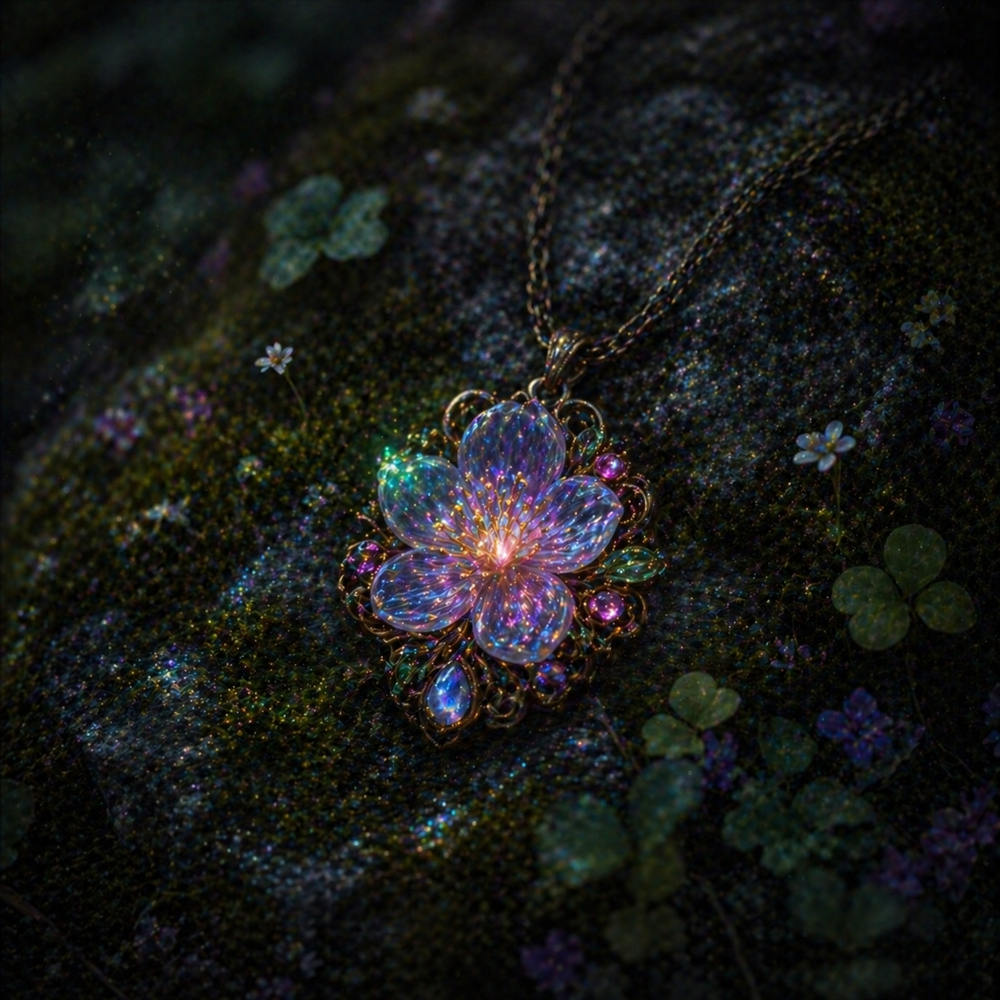
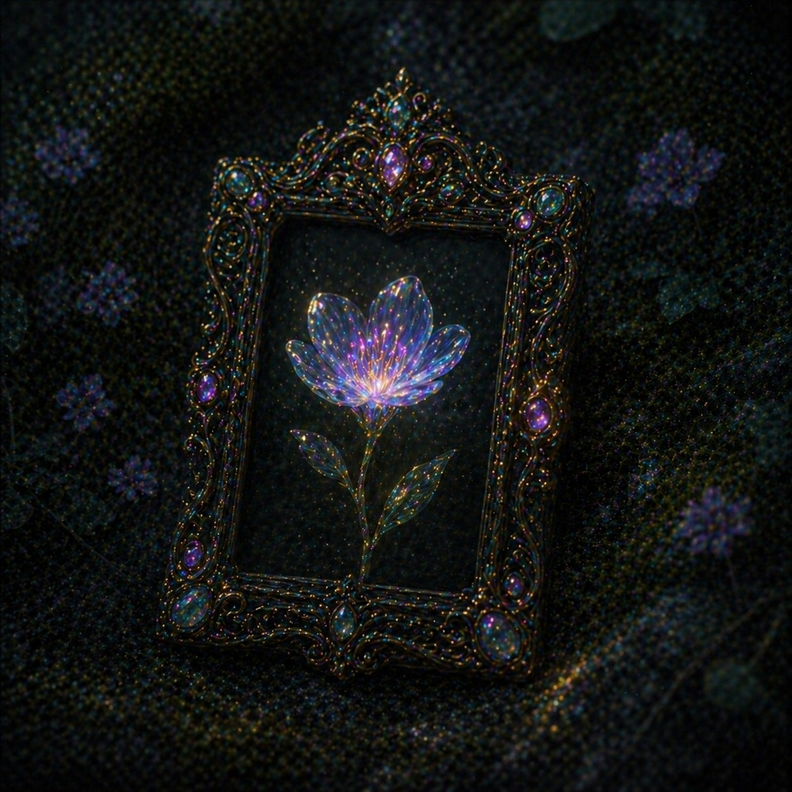

Mira's magic smoothly directed the boat throughout the spring. After sailing for a while, you guys finally reach the end of the spring. As you head deeper into the grove, you come across 2 pedestals, each holding a different object. Your instincts tell you this is the last step to retrieve the flower. Your friends have split opinions on which one you all should pick. Which object do you choose to break the tie?

